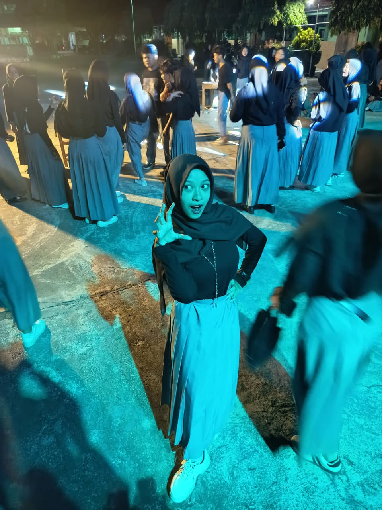
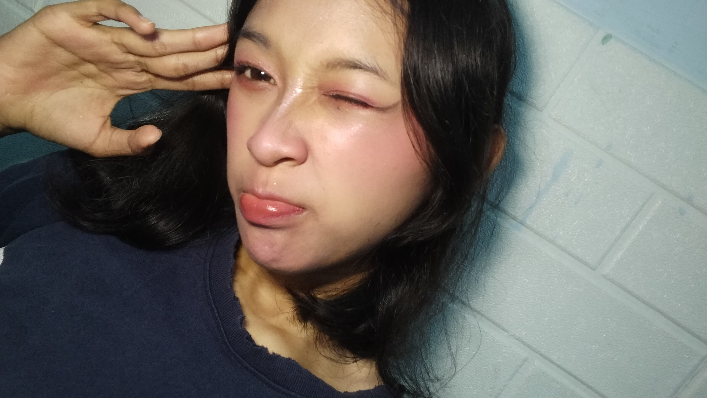
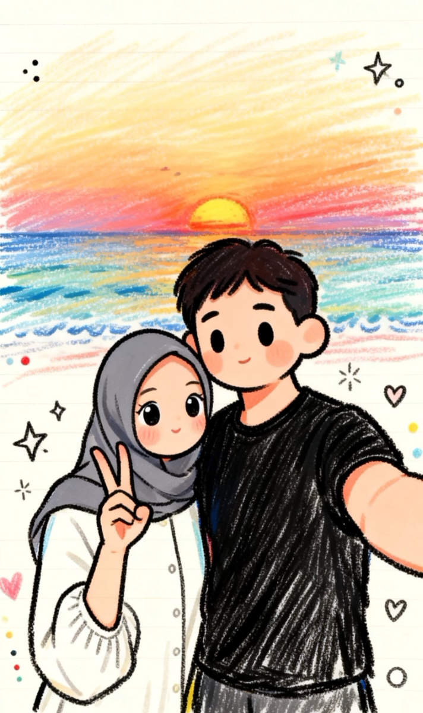
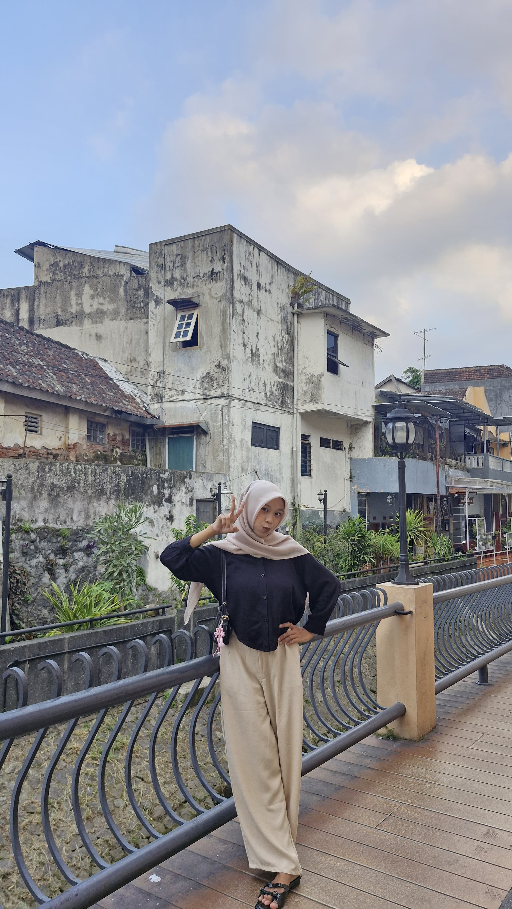

semoga kamu suka sama buku kecil digital buatan aku ya 🥰

liat foto di atas?, yap bener itu cewe aku, sangat cantik bukan udamah cantik, lucu, imut, baik, sabar dan penyayang, dia suka matcha dan tiramisu kalo rasa baru itu si yang aku tau, dia suka semua katanya tapi gatau yang favorit apaa, terus kalo warna yang dia suka uda pasti biruu, terus hal/sesuatu yang ga dia suka yang pertama uda pasti cowo kecuali seorang pria yang bernama nuel, abistu dia juga paling gasuka kesepian, sunyii, dan sendirian, cita cita dia psikolog tapi berubah jadi akuntan, tapi walaupun diganti pasti bakal tetep kecapai si, kan pinter banget, terus dia juga takut kegelapan, dan hari ini adalah hari ulang tahun nya, bertambah usia ke 18 tahun🤧🥳.
💌 PESAN UNTUKMU:
selamat ulang tahun sayang, semoga umurnya di panjangin biar sama aku terus selamanya, semoga rezeki nya di permudahkan, dan semoga impian dan keinginan nya pelan pelan tercapai, kamu harus tetep semangat demi aku hehe, jangan lupa dijaga terus kesehatan nyaa. selamat ulang taun lagi sayang🤍🤍🫰

semenjak aku kenal sama kamu, hidup aku jadi lebih berwarna padahal sebelum nya hidup aku cuman hitam putih, cuman kekosongan isinya, tapii pas kamuu dateng kehidup akuuu, kamu kaya ngisi kekosongan di hidup aku, aku jadi lebih bisa buat senyum, bisa jadi orang yang peduli sama orang lain, jadi orang yang perasa, dan jadi orang yang pengen mencapai semua impian dan keinginan nya, akuu bener bener beruntung punya kamu, kamu yang selalu sabar, selalu nenangin aku pas aku lagi engga baik baik aja, selalu ngeyakinin aku bahwa aku itu pasti bisa, kamu alasan aku senyum tiap hari, alasan aku bahagia tiap hari, bahkan kalo dunia punya miliaran cara buat misahin kita berdua aku pasti punya triliunan cara buat kita sama sama lagi, makasii udaa bertahan sejauh ini, dan selamat ulang taun yang ke 18 sayang.

HAPPY BIRTHDAY SAYANGKUU, bertambah deh umurnya jadi 18 taun, makin tua nyaaaak, semogaa kamuu makin bahagiaa, semogaa kamu lebih banyak senyum nya daripada sedihnya, semoga impian dan keinginan kamu pelan pelan tercapai, semogaaa kedepan nyaa dipermudahkan jalan nya, dan semogaa makin baik, makin penyayang, makin sabaar sama kelakuan aku yang nyeleneh, dan yang paling penting harus tetep sayang terus sama akuuu😡😡🫰
tuhan aja sayang, apalagi nuel.